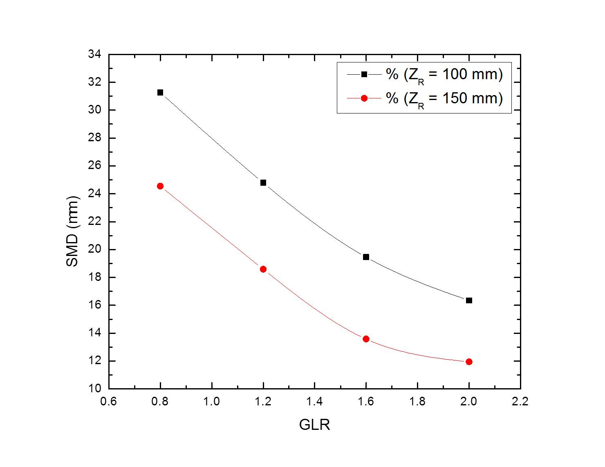
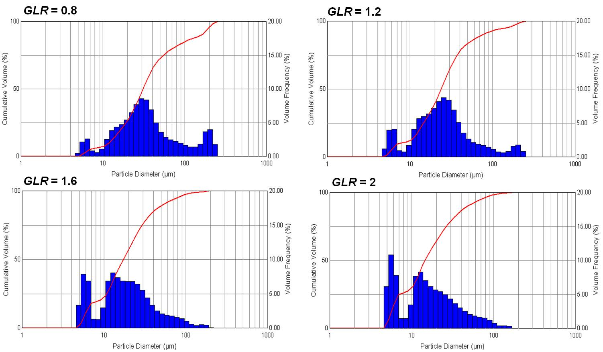
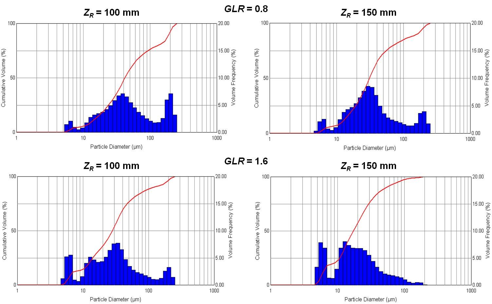

Spray visualization
Development stages of a spray
SMD variation with GLR
- SMD decreased with GLR for a given axial distance (ZR) downstream of orifice.
- SMD at a given GLR decreased with ZR.
- At higher GLR, increased momentum of air caused more turbulence, due to which SMD decreased drastically by collision and breakup of larger drops.
- Secondary atomization results in decreased droplet size at ZR = 150 mm as compared to ZR = 100 mm.
Droplet size distribution at ZR = 150 mm

- Increase in the volume fraction occupied by particles of smaller SMD at higher GLR.
- Size distribution is increasingly skewed towards lower SMD as GLR increases.
- Earlier secondary atomization at higher GLR due to increased turbulence.
Effect of GLR on size distribution

- At a given GLR, increased secondary atomization at ZR = 150 mm decreased the volume fraction of the largest droplet size.
- Higher GLR operation is able to reduce the volume fraction of largest droplet size more effectively.